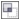

Быстрые ссылки на процедуры, описанные на этой странице:
• |
• |
• |
С помощью объединения и пересечения объектов можно создавать неправильные формы. Можно выполнить объединение и пересечение практически любого объекта, включая клоны, объекты на разных уровнях, а также отдельные объекты с пересекающимися линиями. Однако нельзя выполнить объединение и пересечение обычного текста, размерных линий или шаблонов клонов.
Можно объединить объекты для создания единого объекта с одним абрисом. В новом объекте в качестве абриса будет использоваться периметр объединенного объекта, а также свойства заливки и абриса объекта назначения. Все пересекающиеся линии исчезнут.
Объекты можно объединять независимо от того, перекрывают ли они друг друга. При объединении объектов, которые не перекрываются, они образуют группу объединения, которая действует как единый объект. В обоих случаях объединенный объект получает атрибуты заливки и абриса объекта назначения.
Можно объединить отдельные объекты с пересекающимися линиями, чтобы разделить объект на несколько подпутей, но сохранить его внешний вид.
Объединение листьев с яблоком создает единый абрис объекта.
Пересечение создает объект из области, где перекрываются два или несколько объектов. Форма этого нового объекта может быть простой или сложной, в зависимости от перекрывающихся фигур. Атрибуты заливки и абриса нового объекта зависят от объекта, определяемого в качестве объекта назначения.
| Объединение объектов |
1. |
Выберите исходный объект или объекты.
|
2. |
Удерживая нажатой клавишу Shift, щелкните объект назначения.
|
3. |
Выберите Упорядочить |
Новый объект имеет свойства заливки и абриса объекта назначения.
|
Кроме того, объединить объекты можно, выделив рамкой исходный
объект и объект назначения и нажав кнопку Объединить на
панели свойств.
|
| Пересечение объектов |
1. |
Выберите исходный объект.
|
2. |
Удерживая нажатой клавишу Shift, выберите объект назначения.
|
3. |
Выберите Упорядочить |
Новый объект, созданный на основе перекрывающихся частей
исходного объекта и объекта назначения, имеет свойства заливки и
абриса объекта назначения.
|
Кроме того, можно выполнить пересечение объектов, выбрав
исходный объект и объект назначения и нажав кнопку Пересечение
 на панели свойств.
|
| Пересечение нескольких объектов |
1. |
Выделите рамкой исходный объект или объекты.
|
2. |
Удерживая нажатой клавишу Shift, щелкните все объекты назначения.
|
3. |
Выберите Упорядочить |
Кроме того, можно выполнить пересечение объектов, выделив
рамкой исходный объект и объект назначения и нажав кнопку
Пересечение на панели свойств.
|
Copyright 2012 Corel Corporation. Все права защищены.